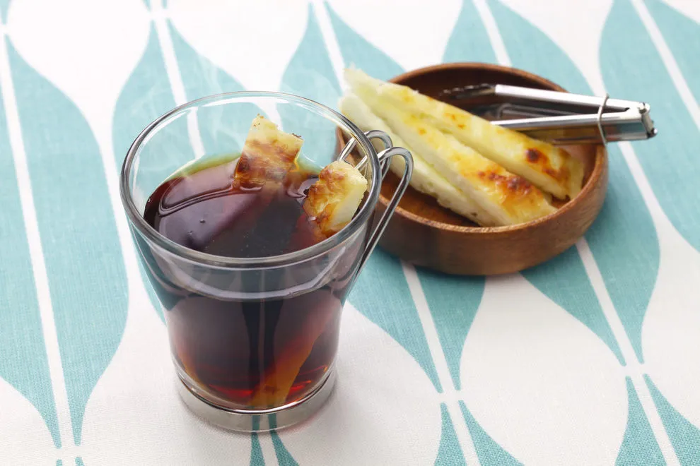

Recipe: Holy Thai Basil

Holy Thai Basil
Let me be completly honest with you. This is just complicated cheese you make yourself and then eat with coffee. I don't know how to make it, but I do know how to eat it. Well outside the directions below.
Ingredients List
- 2 Liters of milk
- 60 ml heavy cream
- 2 teaspoon rennet
Directions
- Pour the milk and cream in a 3-liter saucepan
- Heat to lukewarm (37C)
- Lift off the pan and mix in rennet. Let stand for about 30-40 minutes until the liquid has solidified (curdled itself)
- Stir gently with a slotted spoon while you heat up the liquid to lukewarm again
- Steer the cheese from the edges toward the center of the pan
- When the cheese is gathered into a ball in the middle heat the whole thing up to the boiling point but it should not boil! Take the pan off the heat just before the whey boils
- Place the cheese in a fine mesh colander / strainer large / or in a cheese mold if you have one of those
- Press out as much whey as possible out of the cheese. Set a weight and leave for a few hours so the last whey is pressed out and the cheese gets dry
- Preheat the oven to 200 degrees C. Press the cheese into a well greased casserole dish - cheese should be a maximum of 3 cm thick. Bake the cheese in center of oven until browned. The cheese can also be used without baking but I think it will be tastier to bake it
- If the edges become hard - wrap the warm cheese in aluminum foil afterwards so they soften
- When the cheese has cooled - cut into small cubes or strips, put a pile in the coffee cup and fill the cup with fresh coffee .
- Stir and eat with a spoon